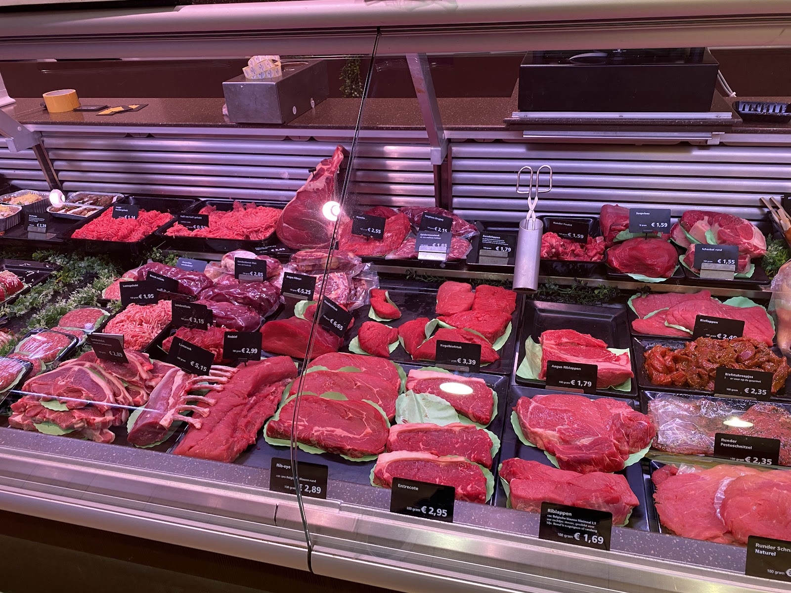
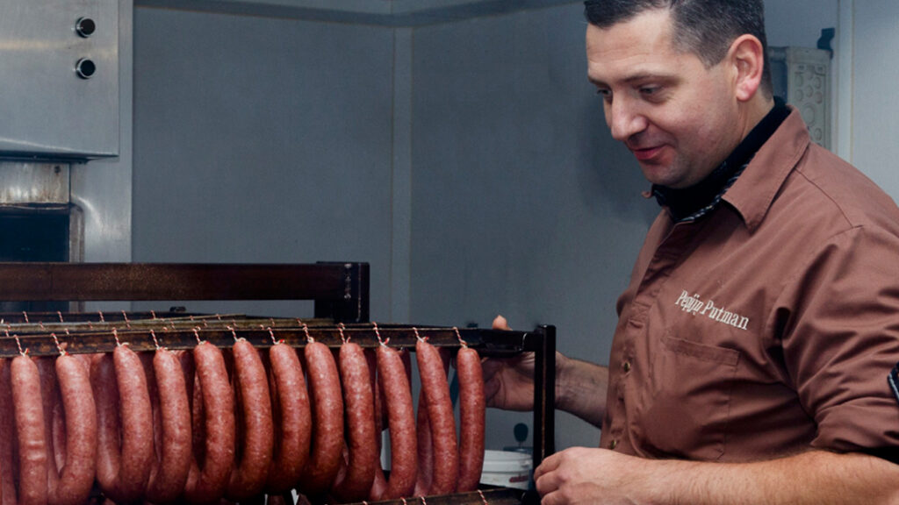
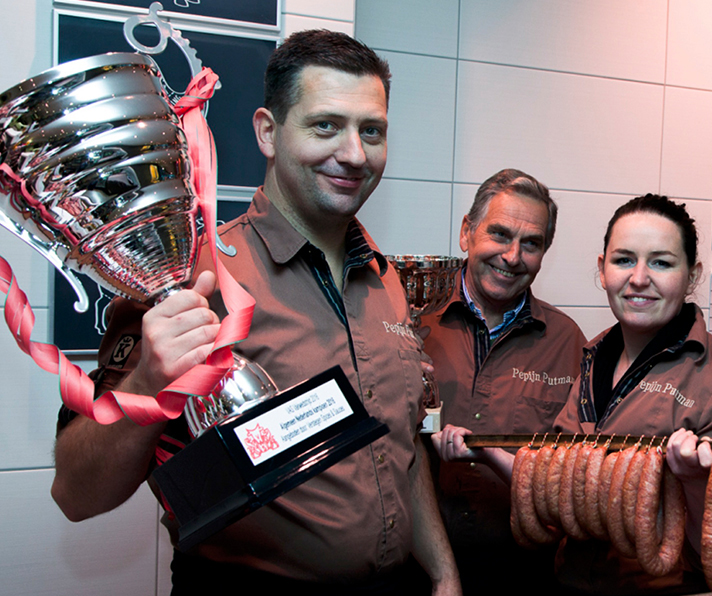
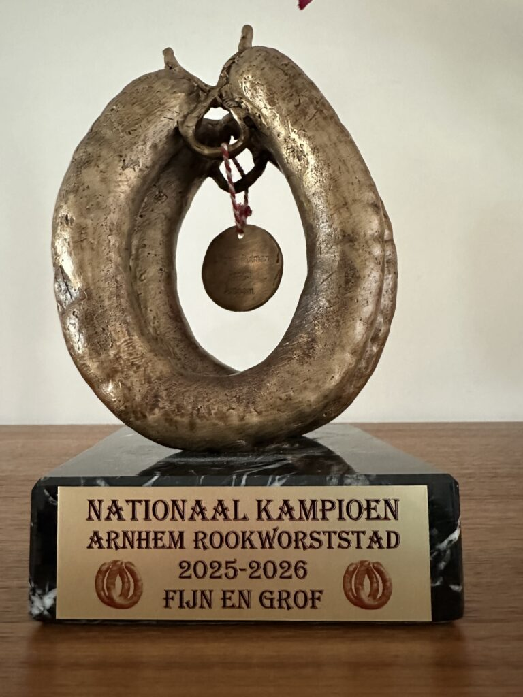
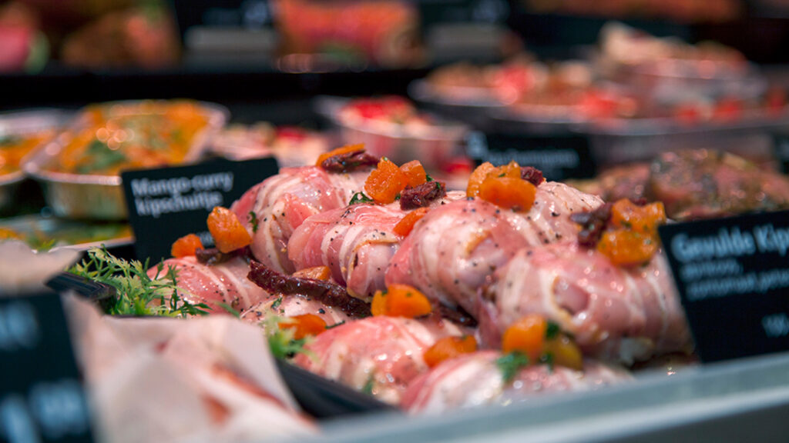
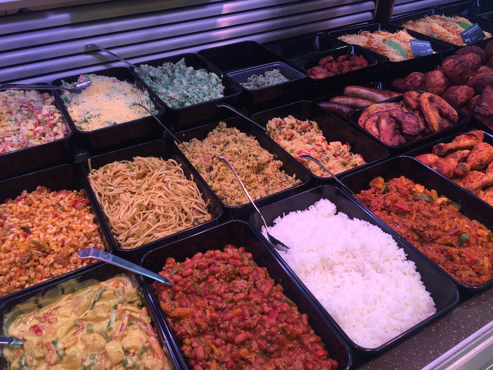
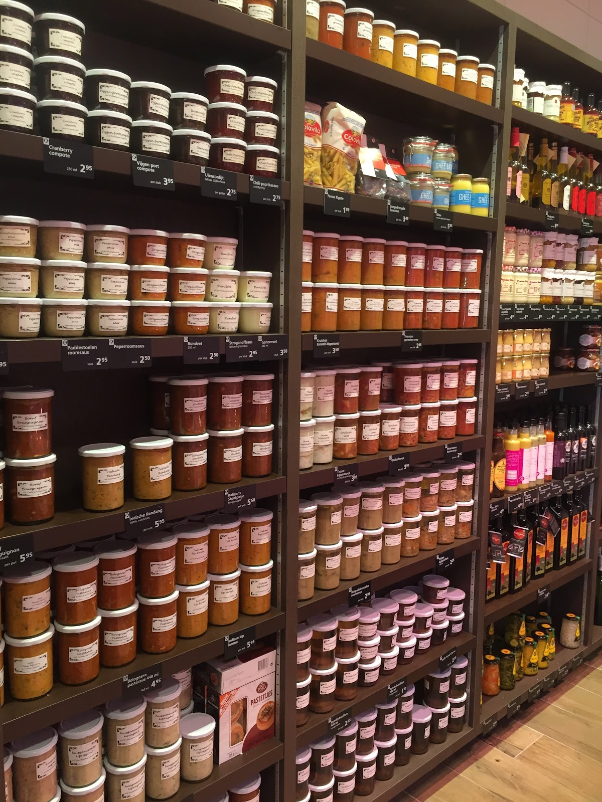
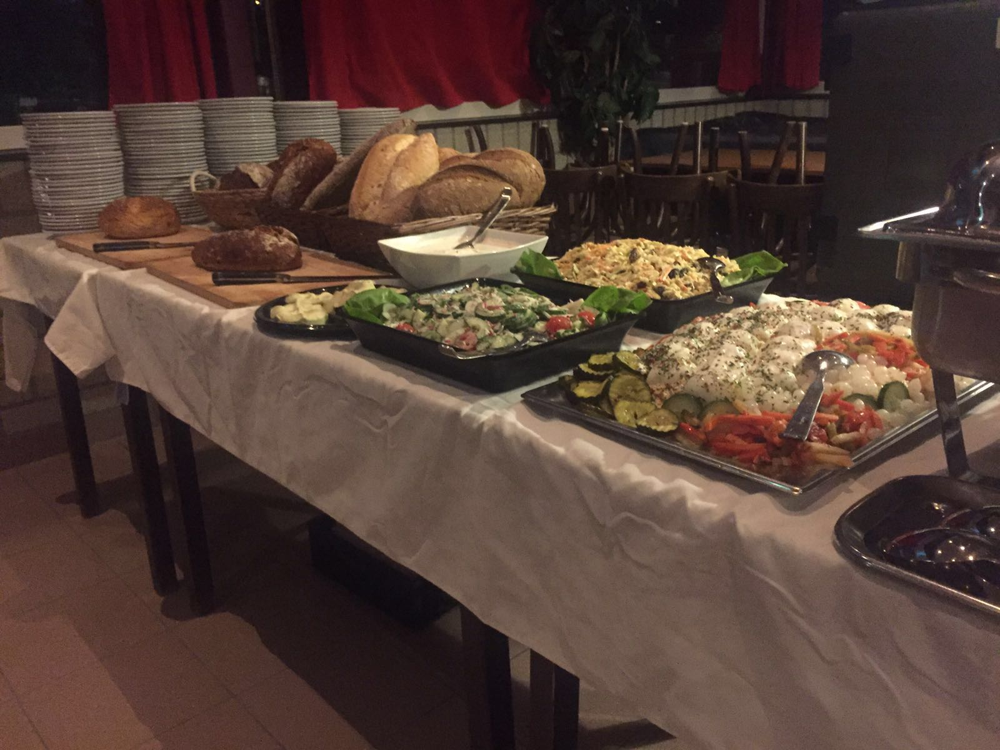
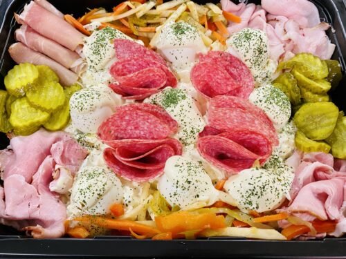
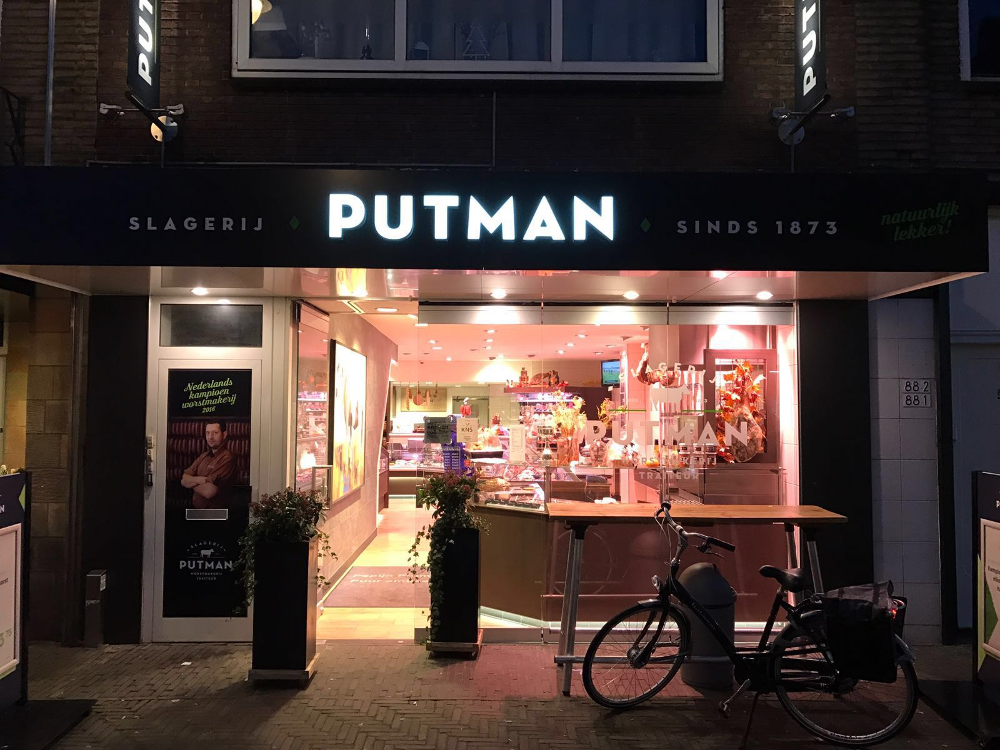

Vers vlees
Rundvlees, varkensvlees, kalfs- en lamsvlees, kip en gevogelte. Vers gesneden zoals u het wilt.
Slager, worstmakerij en traiteur in Arnhem
Vers vlees, huisgemaakte worst en vleeswaren, soepen en kant-en-klare gerechten. Van een slager die meedenkt, voor uw dagelijkse boodschap en uw volgende feest.
4,8 uit 70 Google-reviews

In de eigen worstmakerij maken Pepijn en zijn medewerkers de worst nog zelf. Fijn of grof, gerookt op de manier die prijzen wint.
Bekroond tot Nederlands kampioen bij de slagersvakwedstrijden én tot Nederlands kampioen rookworst.


Van biefstuk voor vanavond tot een pot soep voor morgen. Weet u niet precies wat u zoekt? Vraag het gerust aan de toonbank.

Rundvlees, varkensvlees, kalfs- en lamsvlees, kip en gevogelte. Vers gesneden zoals u het wilt.

Gemarineerd, gevuld of opgerold. Thuis alleen nog in de pan of de oven.

Kant-en-klare gerechten, snacks en grillproducten. Voor de avonden dat koken er niet bij past.

Huisgemaakte soep in de pot, bouillon, fonds en sauzen.
Liever thuis kiezen? Bekijk onze folders en bestel daarna gemakkelijk online. Heeft u toch nog vragen, belt u ons gerust.


Van een borrelschaal voor de verjaardag tot een barbecue voor de hele straat. Bel ons, dan stellen we samen iets samen dat past.
Bij elke €10 die u bij ons besteedt, krijgt u een Putmanzegel. Plak ze op de spaarkaart en kies een culinair cadeau uit onze slagerij.
1 volle kaart
2 volle kaarten
3 volle kaarten
4 volle kaarten
* Minimaal 2 dagen van tevoren bestellen.
4,8
uit 70 Google-reviews
"Naast dat werkelijk alles van erg goede kwaliteit is, van de vleeswaren tot de soepen en kant en klare gerechten ( cordon bleu met boontjes en gebakken aardappeltjes is mijn favoriet) is deze slager ook nog eens sociaal betrokken en dus een groot compliment voor Pepijn en zijn medewerkers!"
"Eindelijk een hele goede slager gevonden in m’n nieuwe omgeving!"
"Heerlijke vleeswaren en overheerlijke worsten. Wij halen hier altijd de worsten voor de bbq en de vleeswaren als beleg. Je kan beter kiezen voor kwaliteit dan kwantiteit als je echt van het leven wilt genieten. Wij zijn zeer te spreken over de keuze, kwaliteit en service. Een echte aanrader deze traiteur van Arnhem!"
"Helemaal tevreden, zeer vriendelijk overzichtelijk en fris . En gezorgd dat wij nog een Kalkoen op donderdag kregen terwijl we de maandag ervoor pas langs kwamen ..zo lief 💚"
"Vriendelijke mensen en vlees en vleeswaren zijn altijd goed!"

| Maandag | Gesloten |
| Dinsdag | 09:00 tot 18:00 |
| Woensdag | 09:00 tot 18:00 |
| Donderdag | 09:00 tot 18:00 |
| Vrijdag | 09:00 tot 18:00 |
| Zaterdag | 08:30 tot 17:00 |
| Zondag | Gesloten |